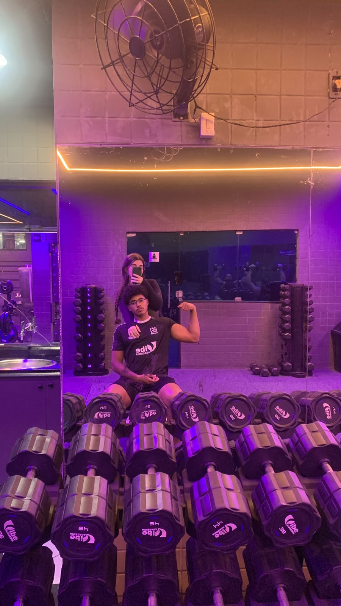

Trabalho em equipe
Uma das características que mais me chama atenção no voleibol é a necessidade de cooperação entre os jogadores.
Cada jogador possui uma função e precisa se comunicar com os demais integrantes da equipe durante a partida.
O voleibol é o esporte que mais desperta meu interesse.
O voleibol é um dos esportes que mais gosto e faz parte dos meus interesses pessoais.
Gosto da modalidade principalmente por envolver trabalho em equipe, comunicação e movimentação durante a partida.
O voleibol é um esporte coletivo disputado entre duas equipes, separadas por uma rede.
Durante a partida, os jogadores precisam trabalhar em conjunto para manter a bola em jogo e conquistar pontos.
Alguns dos principais fundamentos utilizados no voleibol são:
Uma das características que mais me chama atenção no voleibol é a necessidade de cooperação entre os jogadores.
Cada jogador possui uma função e precisa se comunicar com os demais integrantes da equipe durante a partida.

Assim como uma equipe precisa de organização para funcionar bem, um projeto em HTML também precisa de organização.
Neste site, as informações foram divididas em diferentes páginas para facilitar a navegação e organizar os conteúdos.
O esporte também pode ensinar sobre disciplina, cooperação e trabalho em equipe.